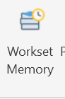
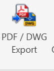
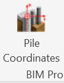
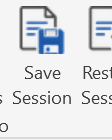
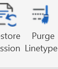
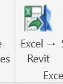

Built for Revit Productivity
BIM Pro provides practical tools for structural, architectural, engineering, and BIM professionals who want to reduce repetitive tasks and improve consistency within their Revit workflow.
Supports Revit 2024, 2025, 2026 & 2027
BIM Pro Tools

PDF / DWG Export

File Coordinates

Save Session

Restore Session

Purge Linetypes
BIM Pro in Revit
BIM Pro adds practical production and BIM-management tools directly to the Revit interface, keeping commonly needed workflows close at hand.
Support
For BIM Pro support, contact: davidjimm1967@gmail.com
BIM Pro is distributed through the Autodesk Marketplace. A 30-day local trial is available before subscription entitlement is required.
Subscription pricing: $20/month or $150/year.